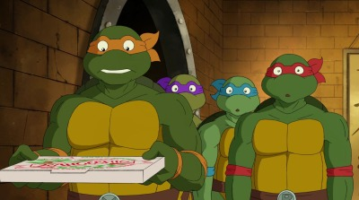

About Michelangelo
Michelangelo or Mike/Mikey is one of the four main protagonists in Teenage Mutant Ninja Turtles and a member of the TMNT. He is the youngest brother of Leonardo, Raphael, and Donatello, and the youngest son of Master Splinter. .
Michelangelo characteristics
- He is "The Wild One" of the team
- Nickname is Mikey or Mike
- Wordphrase is "Cowabunga!"
This is Michelangelo in his prime!
